OI Wiki · prijevod · Strukture podatakaOI Wiki · translation · Data structures
Binarni heapBinary heap
Sadržaj
Struktura
Krenimo od strukture binarnog heapa: to je binarno stablo, i to potpuno binarno stablo, u čijem je svakom čvoru pohranjen jedan element (odnosno, svaki čvor ima težinu).
Svojstvo heapa: težina roditelja nije manja od težine djeteta (max-heap). Analogno možemo definirati min-heap. U ovom tekstu kao primjer uzimamo max-heap.
Zbog svojstva heapa korijen sadrži najveću vrijednost (time je operacija getmax riješena).
Postupak
Umetanje
Umetanje znači ubaciti element u binarni heap tako da on i nakon umetanja ostane potpuno binarno stablo.
Najjednostavniji je način umetnuti ga iza krajnjeg desnog lista u najdonjoj razini.
Ako je najdonja razina puna, dodaje se nova razina.
Nakon umetanja svojstvo heapa možda više ne vrijedi?
Prilagodba prema gore: ako je težina tog čvora veća od težine njegova roditelja, zamijenimo ih i postupak ponavljamo dok uvjet ne prestane vrijediti ili dok ne dođemo do korijena.
Može se dokazati da nakon umetanja i prilagodbe prema gore nijedan drugi čvor ne krši svojstvo heapa.
Vremenska složenost prilagodbe prema gore je \(O(\log n)\).

Brisanje
Brisanje znači izbrisati najveći element heapa, tj. izbrisati korijen.
No ako ga izravno izbrišemo, dobivamo dva heapa, s čime je teško raditi.
Zato razmotrimo obrnuti postupak od umetanja: pokušajmo korijen premjestiti na mjesto posljednjeg čvora i zatim ga jednostavno izbrisati.
U praksi to nije lako izvesti, pa obično postupamo ovako: korijen i posljednji čvor izravno zamijenimo.
Tada izravno izbrišemo korijen (koji je sada na mjestu posljednjeg čvora), ali novi korijen možda ne zadovoljava svojstvo heapa...
Prilagodba prema dolje: među djecom tog čvora nađemo najveće, zamijenimo ga s čvorom i postupak ponavljamo do najdonje razine.
Može se dokazati da nakon brisanja i prilagodbe prema dolje nijedan drugi čvor ne krši svojstvo heapa.
Vremenska složenost je \(O(\log n)\).
Povećanje težine nekog čvora
Očito: nakon izravne izmjene dovoljna je jedna prilagodba prema gore, vremenska složenost \(O(\log n)\).
Implementacija
Vidimo da se gore opisane operacije oslanjaju na dvije ključne stvari: prilagodbu prema gore i prilagodbu prema dolje.
Heap prikazujemo nizom \(h\). Djeca čvora \(h_i\) su \(h_{2i}\) i \(h_{2i+1}\), a \(1\) je korijen:
Referentni kôd:
void up(int x) {
while (x > 1 && h[x] > h[x / 2]) {
std::swap(h[x], h[x / 2]);
x /= 2;
}
}
void down(int x) {
while (x * 2 <= n) {
t = x * 2;
if (t + 1 <= n && h[t + 1] > h[t]) t++;
if (h[t] <= h[x]) break;
std::swap(h[x], h[t]);
x = t;
}
}
Izgradnja heapa
Razmotrimo sljedeći problem: krećemo od praznog heapa i umećemo \(n\) elemenata, pri čemu redoslijed nije bitan.
Umetanje jednog po jednog traje \(O(n \log n)\); postoji li bolji način?
Prvi način: prilagodba prema gore
Krenemo od korijena i idemo u BFS poretku.
void build_heap_1() {
for (i = 1; i <= n; i++) up(i);
}
Ovaj je postupak i dalje ekvivalentan umetanju jednog po jednog, samo što su elementi unaprijed smješteni u niz, što poboljšava konstantu. U najgorem slučaju vremenska složenost zadovoljava rekurziju \(T(n) = T(n - 1) + \Theta(\log n)\), pa zbrajanjem dobivamo \(T(n) = \Theta(n \log n)\).
Drugi način: prilagodba prema dolje
Promijenimo pristup: krenemo od listova i redom radimo prilagodbu prema dolje.
void build_heap_2() {
for (i = n; i >= 1; i--) down(i);
}
Drukčije rečeno, svaki put „spajamo” dva već uređena heapa, što objašnjava ispravnost.
Uočimo da listove ne treba prilagođavati, pa možemo krenuti od otprilike \(n/2\)-tog mjesta u nizu, što poboljšava konstantu. Prema tumačenju da svaki put spajamo dva heapa možemo napisati rekurziju za vremensku složenost \(T(n) = 2T(\dfrac{n}{2}) + O(\log n)\), a iz glavnog teorema slijedi \(T(n) = \Theta(n)\).
Heap se može izgraditi u \(\Theta(n)\) zato što je svojstvo heapa vrlo slabo: binarni heap nije jedinstven.
Uz jak uvjet poput sortiranosti to ne bi bilo moguće.
Primjene
Dvostruki heap
SPOJ RMID2 - Running Median Again
Održavajte niz uz dvije vrste operacija:
- umetni element u niz
- ispiši i izbriši trenutni medijan niza (ako je duljina niza parna, ispiši manji medijan)
Problem se može dalje poopćiti: dinamički održavati \(k\)-ti najveći broj u nizu, pri čemu se \(k\) može mijenjati.
Za takve probleme možemo upotrijebiti tehniku dvostrukog heapa (two heaps) (izbjegavajući zamorno pisanje segment treea po vrijednostima ili BST-a).
Dvostruki heap sastoji se od jednog max-heapa i jednog min-heapa: min-heap čuva velike vrijednosti, tj. \(k\) najvećih (uključujući \(k\)-ti), a max-heap čuva male vrijednosti, tj. sve ostale, manje od \(k\)-tog najvećeg.
Struktura sastavljena od ta dva heapa podržava sljedeće operacije:
- održavanje: dok je veličina min-heapa manja od \(k\), uzimaj vrh max-heapa i umeći ga u min-heap dok veličina min-heapa ne postane \(k\); dok je veličina min-heapa veća od \(k\), uzimaj vrh min-heapa i umeći ga u max-heap dok veličina min-heapa ne postane \(k\);
- umetanje elementa: ako je element veći ili jednak vrhu min-heapa, umetni ga u min-heap, inače u max-heap, a zatim održavaj dvostruki heap;
- upit za \(k\)-ti najveći element: traženi element je vrh min-heapa;
- brisanje \(k\)-tog najvećeg elementa: izbriši vrh min-heapa, a zatim održavaj dvostruki heap;
- \(k\) \(+1/-1\): izravno održavaj dvostruki heap prema novoj vrijednosti \(k\).
Očito je složenost upita za \(k\)-ti najveći element \(O(1)\). Budući da se nakon umetanja, brisanja ili promjene \(k\) veličina min-heapa od željenog \(k\) razlikuje najviše za \(1\), svako održavanje zahtijeva najviše jedno premještanje elementa između max-heapa i min-heapa, pa je složenost svih tih operacija \(O(\log n)\).
Referentni kôd
#include <iostream>
#include <queue>
using namespace std;
int main() {
cin.tie(nullptr)->sync_with_stdio(false);
int t, x;
cin >> t;
while (t--) {
// max-heap, čuva prvu polovicu elemenata (manje vrijednosti)
priority_queue<int, vector<int>, less<int>> a;
// min-heap, čuva drugu polovicu elemenata (veće vrijednosti)
priority_queue<int, vector<int>, greater<int>> b;
while (cin >> x, x) {
// ako je operacija upit s brisanjem, ispiši i izbriši vrh max-heapa
// jer zadatak traži manji od dvaju medijana (za paran broj elemenata postoje dva kandidata)
// to se malo razlikuje od gornjeg objašnjenja k-tog najvećeg, ali tko je razumio gornje, lako će se snaći
if (x == -1) {
cout << a.top() << '\n';
a.pop();
}
// ako je operacija umetanje, prema vrhu max-heapa odaberi heap u koji se umeće
else {
if (a.empty() || x <= a.top())
a.push(x);
else
b.push(x);
}
// uravnoteži dvostruki heap
if (a.size() > (a.size() + b.size() + 1) / 2) {
b.push(a.top());
a.pop();
} else if (a.size() < (a.size() + b.size() + 1) / 2) {
a.push(b.top());
b.pop();
}
}
}
return 0;
}
Zadaci
Contents
Structure
Let us start with the structure of a binary heap: it is a binary tree, and moreover a complete binary tree, where every node stores one element (or, put differently, has a weight).
Heap property: the weight of a parent is not less than the weight of its children (max-heap). Similarly we can define a min-heap. This article uses the max-heap as the example.
By the heap property the root holds the maximum (so the getmax operation is solved).
Procedures
Insertion
Insertion means inserting an element into the binary heap while guaranteeing that it is still a complete binary tree afterwards.
The simplest way is to insert after the rightmost leaf of the bottom level.
If the bottom level is full, add a new level.
After the insertion the heap property might be violated?
Sift up: if the weight of this node is greater than the weight of its parent, swap them, and repeat this process until the condition fails or the root is reached.
It can be proved that after inserting and sifting up, no other node violates the heap property.
The time complexity of sifting up is \(O(\log n)\).
Deletion
Deletion means removing the largest element of the heap, i.e. deleting the root.
But if we delete it directly, we get two heaps, which is hard to handle.
So consider the reverse of insertion: try to move the root to the position of the last node and then simply delete it.
In practice this is not easy to do, so the usual method is to directly swap the root with the last node.
Then we directly delete the root (now at the position of the last node), but the new root may not satisfy the heap property...
Sift down: among the children of this node find the largest one, swap it with the node, and repeat this process down to the bottom level.
It can be proved that after deleting and sifting down, no other node violates the heap property.
Time complexity \(O(\log n)\).
Increasing the weight of a node
Obviously, after modifying it directly, one sift up suffices; the time complexity is \(O(\log n)\).
Implementation
We notice that the operations introduced above rely mainly on two cores: sift up and sift down.
Consider representing the heap by a sequence \(h\). The two children of \(h_i\) are \(h_{2i}\) and \(h_{2i+1}\), and \(1\) is the root:
Reference code:
void up(int x) {
while (x > 1 && h[x] > h[x / 2]) {
std::swap(h[x], h[x / 2]);
x /= 2;
}
}
void down(int x) {
while (x * 2 <= n) {
t = x * 2;
if (t + 1 <= n && h[t + 1] > h[t]) t++;
if (h[t] <= h[x]) break;
std::swap(h[x], h[t]);
x = t;
}
}
Building a heap
Consider the following problem: starting from an empty heap, insert \(n\) elements, order irrelevant.
Inserting them one by one takes \(O(n \log n)\) time; is there a better way?
Method 1: sift up
Start from the root and proceed in BFS order.
void build_heap_1() {
for (i = 1; i <= n; i++) up(i);
}
This approach is still equivalent to inserting one by one; the elements are merely placed in the array in advance, which improves the constant. So in the worst case the time complexity satisfies the recurrence \(T(n) = T(n - 1) + \Theta(\log n)\), which sums to \(T(n) = \Theta(n \log n)\).
Method 2: sift down
Now change the approach: start from the leaves and sift down one by one.
void build_heap_2() {
for (i = n; i >= 1; i--) down(i);
}
Another way to see it: each step "merges" two already adjusted heaps, which shows correctness.
Note that leaves need no adjustment, so we can start from about position \(n/2\) of the sequence, which improves the constant. Using the interpretation of merging two heaps each time, we can write the recurrence \(T(n) = 2T(\dfrac{n}{2}) + O(\log n)\) for the time complexity, and by the master theorem \(T(n) = \Theta(n)\).
The reason a heap can be built in \(\Theta(n)\) is that the heap property is very weak: a binary heap is not unique.
With a strong condition like sortedness this would not be possible.
Applications
Dual heap
SPOJ RMID2 - Running Median Again
Maintain a sequence supporting two operations:
- insert an element into the sequence
- output and delete the current median of the sequence (if the length of the sequence is even, output the smaller median)
This problem can be further abstracted as: dynamically maintain the \(k\)-th largest number in a sequence, where the value of \(k\) may change.
For this kind of problem we can use the dual heap (two heaps) technique (which avoids the hassle of writing a segment tree over values or a BST).
A dual heap consists of a max-heap and a min-heap: the min-heap maintains the large values, i.e. the \(k\) largest values (including the \(k\)-th), and the max-heap maintains the small values, i.e. the other numbers smaller than the \(k\)-th largest.
The data structure formed by these two heaps supports the following operations:
- maintenance: while the size of the min-heap is less than \(k\), repeatedly take the top of the max-heap and insert it into the min-heap until the size of the min-heap equals \(k\); while the size of the min-heap is greater than \(k\), repeatedly take the top of the min-heap and insert it into the max-heap until the size of the min-heap equals \(k\);
- insert an element: if the inserted element is greater than or equal to the top of the min-heap, insert it into the min-heap, otherwise insert it into the max-heap, then maintain the dual heap;
- query the \(k\)-th largest element: the top of the min-heap is the answer;
- delete the \(k\)-th largest element: delete the top of the min-heap, then maintain the dual heap;
- \(k\) \(+1/-1\): maintain the dual heap directly according to the new value of \(k\).
Obviously, querying the \(k\)-th largest element takes \(O(1)\). Since after an insertion, deletion or change of \(k\) the size of the min-heap differs from the desired \(k\) by at most \(1\), each maintenance needs at most one adjustment of elements between the max-heap and the min-heap, so all these operations take \(O(\log n)\).
Reference code
#include <iostream>
#include <queue>
using namespace std;
int main() {
cin.tie(nullptr)->sync_with_stdio(false);
int t, x;
cin >> t;
while (t--) {
// max-heap, holds the first half of the elements (the smaller values)
priority_queue<int, vector<int>, less<int>> a;
// min-heap, holds the second half of the elements (the larger values)
priority_queue<int, vector<int>, greater<int>> b;
while (cin >> x, x) {
// for a query-and-delete operation, output and remove the top of the max-heap
// because this problem asks for the smaller median (with an even count there are two median candidates)
// this differs slightly from the k-th largest explanation above, but once you understand that, a small tweak makes it clear
if (x == -1) {
cout << a.top() << '\n';
a.pop();
}
// for an insert operation, choose the heap to insert into based on the top of the max-heap
else {
if (a.empty() || x <= a.top())
a.push(x);
else
b.push(x);
}
// rebalance the dual heap
if (a.size() > (a.size() + b.size() + 1) / 2) {
b.push(a.top());
a.pop();
} else if (a.size() < (a.size() + b.size() + 1) / 2) {
a.push(b.top());
b.pop();
}
}
}
return 0;
}